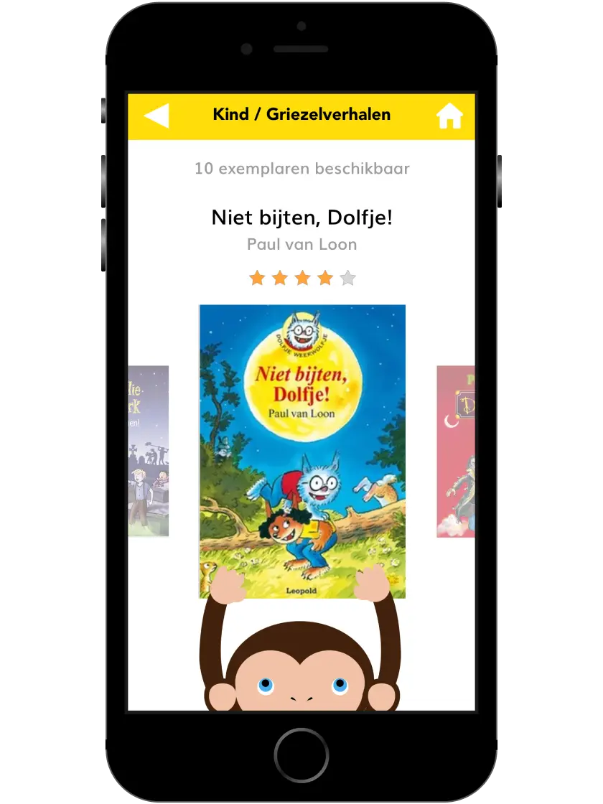
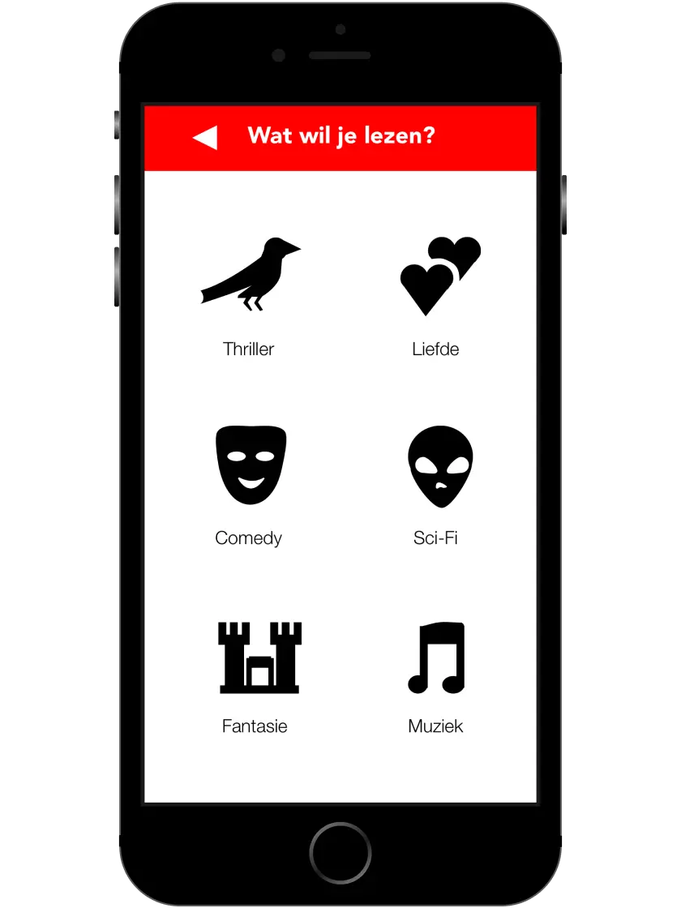
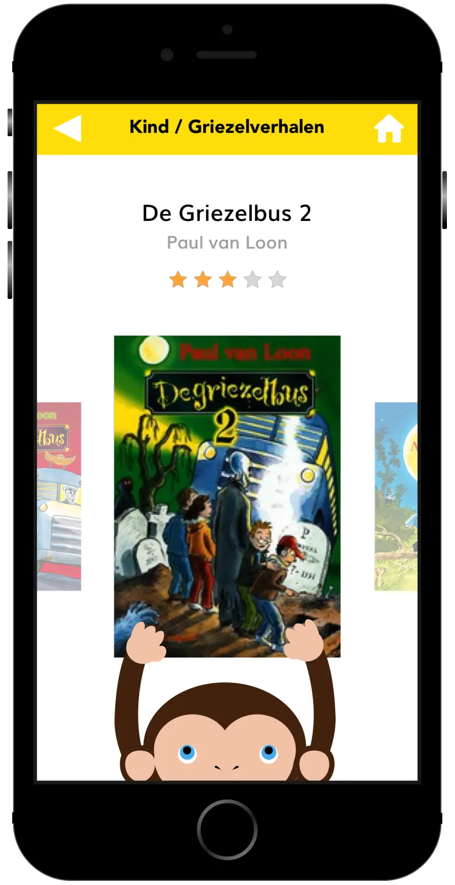
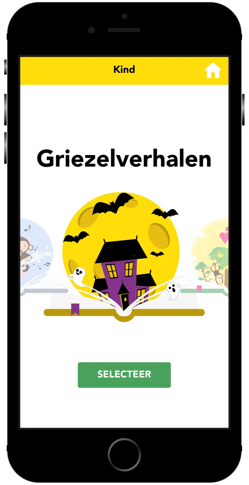
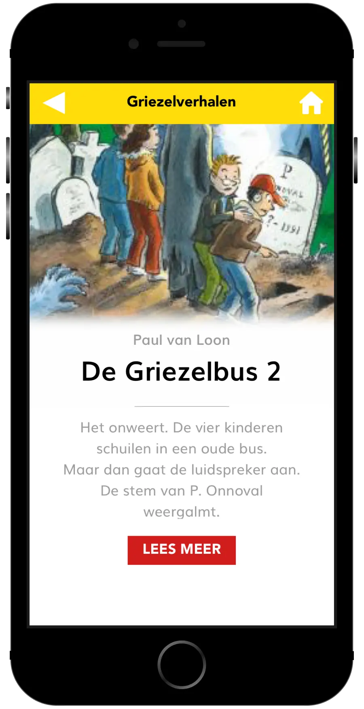
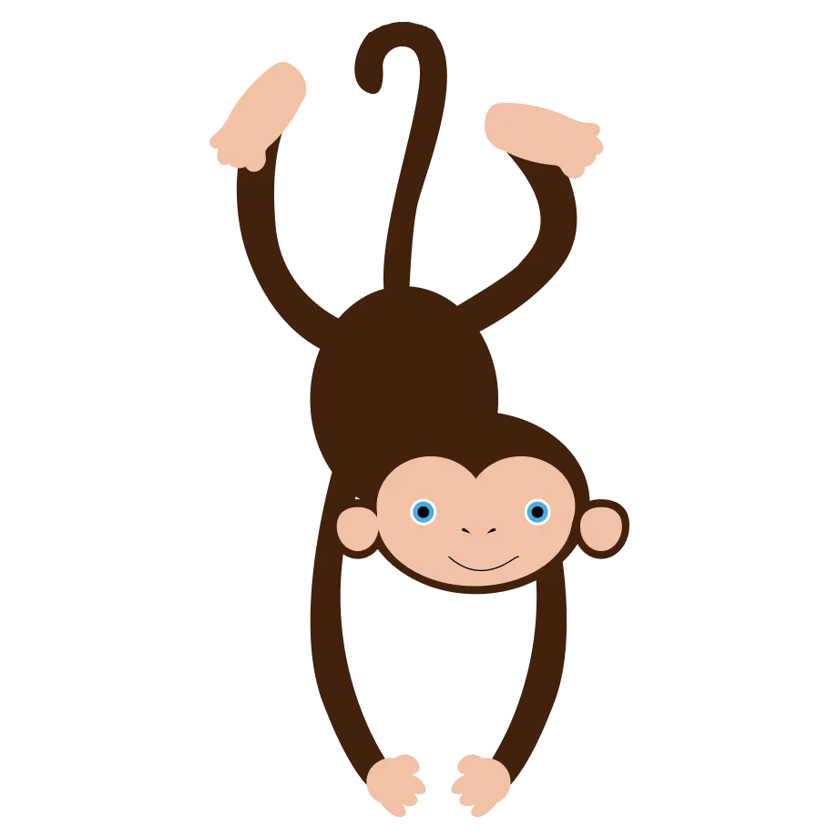

concept
Het verkennen van eerste ideeën voor de interface en het ontwikkelen van de mascotte.
Help! Ik zoek een boek is een conceptuele applicatie voor de OBA, ontwikkeld tijdens het vak Visual Interface Design.
Het doel van de applicatie is om het voor kinderen gemakkelijker en leuker te maken om een boek te vinden en te reserveren. Door te zoeken op genre en leeftijd krijgen kinderen een overzichtelijke manier om boeken te ontdekken en meer te leren over het gekozen verhaal.

De uitdaging was om een interface te ontwerpen die kinderen op een eenvoudige en leuke manier helpt bij het vinden en reserveren van een boek.
Hierbij moest de informatie duidelijk en begrijpelijk blijven, terwijl de interface tegelijkertijd aantrekkelijk en uitnodigend moest zijn voor verschillende leeftijdsgroepen.
Het verkennen van eerste ideeën voor de interface en het ontwikkelen van de mascotte.
Het uitwerken van verschillende schermen en indelingen, waarbij ik rekening heb gehouden met leeftijd, navigatie en de Gestalt-principes.
Het uitwerken van de visuele stijl, boekgenres en illustraties. Daarnaast heb ik verschillende interacties en animaties ontworpen, zoals de favorieten- en loading states.
Het samenbrengen van de gekozen ontwerpkeuzes in de definitieve interface. Hierbij heb ik onder andere de boekdetailpagina en reserveringsschermen uitgewerkt tot het uiteindelijke concept.
Het uitwerken van de visuele stijl en verschillende interactieve elementen binnen de interface. Hierbij heb ik illustraties voor de boekgenres ontwikkeld en animaties toegepast om de interactie en feedback voor de gebruiker duidelijker en speelser te maken.

Het uitwerken van de gekozen richting tot de definitieve interface, waarbij de gridstructuur, kleur en visuele hiërarchie samenkomen in de uiteindelijke schermen.



Dit project heeft mij geleerd hoe belangrijk het is om een interface af te stemmen op de doelgroep. Door rekening te houden met verschillende leeftijden, visuele elementen en interactie heb ik geleerd om een kindvriendelijke ervaring te creëren die zowel duidelijk als aantrekkelijk is. Daarnaast heeft het werken met illustraties, animaties en Gestalt-principes mijn vaardigheden binnen visual interface design verder ontwikkeld.
People ignore design that ignores people.

Bekijk de video en ontdek hoe Help! Ik zoek een boek in gebruik werkt.
Hierin komen de verschillende schermen, interacties en animaties samen en krijg je een beeld van hoe de uiteindelijke gebruikerservaring is opgebouwd.
Of lees gerust het procesboek door.